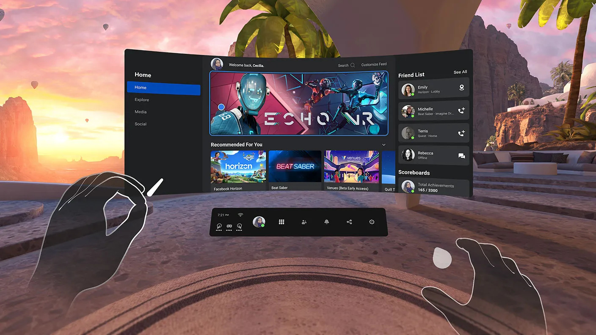
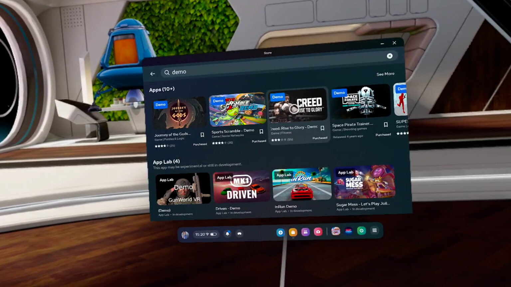
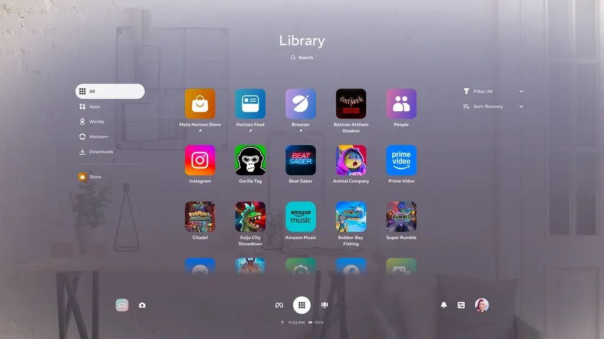
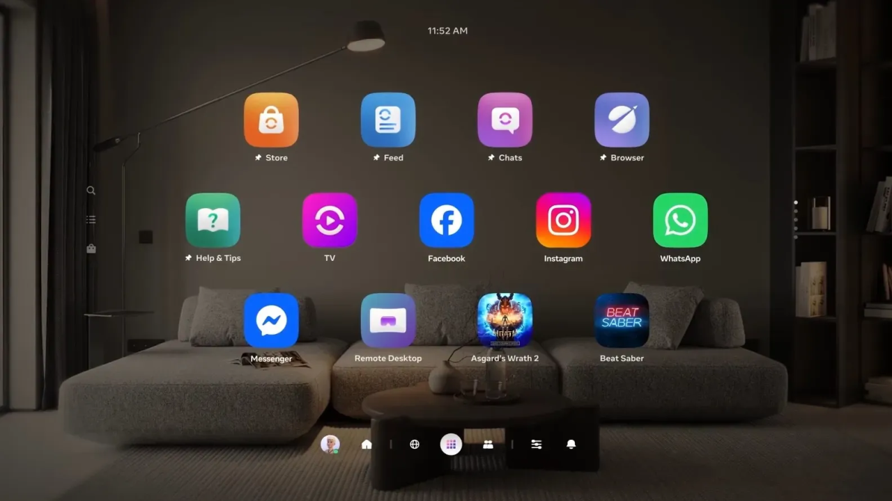
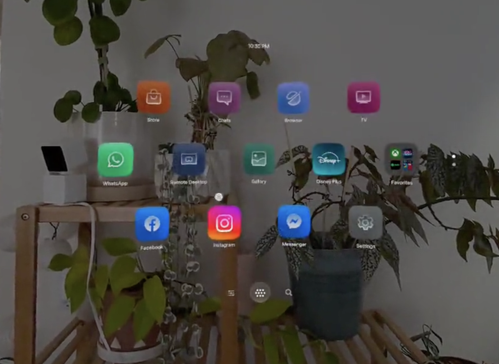

Designing the most persistent surface in VR — from the legacy AUI Bar to a simplified, focused Navigator System Bar.
Navigation is the backbone of any operating system — it determines how efficiently users discover content, move between destinations, and get things done. In VR, where there’s no desktop or home button to fall back on, the system bar is the single surface that bridges every experience: launching apps, switching environments, finding people, and adjusting settings. Getting it right directly shapes how fluid and intuitive the entire OS feels.
I owned the system bar’s evolution across Horizon OS — from the legacy AUI Bar (Anywhere User Interface) through the Navigator System Bar that shipped to production, and into a north star exploration that defined where it could go next. The journey moved from a utility-heavy bar packed with controls, to a unified bar with vertical dividers grouping related functions, to a focused 3-tab exploration (Settings, Apps, Search) that pushed for maximum clarity. Each iteration refined the answer to the same question: what deserves to live on the most persistent surface in VR?


The AUI Bar — Anywhere User Interface — was the first navigation surface in VR. In its initial form, it included Profile, Apps, Library, People, Notifications, Sharing, and Settings. Each tab opened a corresponding page, and on the left side users could access system controls like Wi-Fi settings, controller status, battery level, and time. This was the foundational definition of how users navigated the OS.
The AUI Bar evolved. As the platform grew, the bar was updated to include Profile, Settings, Notifications, a VR/MR switcher, running apps, and pinned apps — with a nine-grid Library icon on the right for quick access to the app library. The bar became the Swiss Army knife of the OS: every new feature found a home on it, and running apps accumulated alongside system controls.
The problem. Each icon earned its spot individually, but collectively the bar was doing too much. In VR, where the system bar is always in your field of view, that visual weight compounds — every button is a persistent cost to the user’s attention. The AUI Bar needed to evolve from a utility strip into something that respected the medium.
Every persistent surface taxes attention.


The Navigator System Bar replaced the AUI Bar and shipped to production with a new three-part layout. The bottom center held three primary tabs — Meta, Library, and Show/Hide Head Display — establishing the main navigation anchors. On the left, the environment switcher (MR/VR toggle) and camera were grouped together. On the right, notifications, settings, and profile were clustered as a utility group.
A design tension emerged. The asymmetric layout worked functionally, but visually it felt scattered: two icons on the left, three on the right, with the primary tabs in the center. The bar didn’t read as one cohesive surface at a glance.
Solving the scatter. After multiple rounds of iteration and leadership review, we consolidated all controls into a single unified bar at the bottom center, using vertical dividers to separate three clear groups. On the left: Profile and Home Environment Switcher. In the middle: Spaces, Library, and Apps — the primary navigation destinations. On the right: Quick Controls and Notifications. The vertical dividers gave each group its own identity while keeping everything on one continuous surface — visually balanced, structurally clear, and no longer scattered across disconnected clusters.
Rigorous iteration before shipping. The system bar didn’t arrive at this layout on the first try. I collaborated closely with designers and UX researchers through six to seven distinct versions, each tested in-headset and refined based on manager and director-level feedback. We generated APK builds for each iteration and presented them to leadership, going back and forth until the bar felt right — not just functionally, but in the body. Every round sharpened the grouping, the spacing, and the visual weight of the bar.
Physical ergonomics. Beyond the visual design, we rotated the system bar slightly to make it easier for users to reach and tap — whether using hand tracking or ray-cast input. The angle was tuned so that both input methods felt natural, reducing the physical effort of interacting with the most frequently used surface in VR.
Micro-gesture integration. I worked with the IXI (Input & Interaction) team to integrate micro-gesture controls into the system bar. Users can swipe left and right with their thumb and index finger to switch between tabs — no need to point and tap. This gesture-based navigation made tab switching faster and more fluid, bridging the system bar with the platform’s broader hand-tracking input system and creating a seamless interaction model across the OS.

How minimal can the system bar go? In this exploration, I stripped the bar down to just three tabs: Settings, App Library, and Search. No Spaces, no People — only the controls users reach for mid-session without needing the full Navigator. The result is a visually clean, unobtrusive bar that barely registers in peripheral vision, letting the MR environment and content take center stage.
Why Spaces and People were removed. This was a deliberate product decision, not an oversight. Following leadership discussions, Horizon Worlds was no longer integrated into the Horizon OS system in the same way, so the Spaces tab was cut. People was also removed to keep the bar as concise as possible — though whether it returns in a future iteration remains an open question. The exploration reflected where the product strategy stood at the time: prioritize clarity and simplicity, and let the debated features resolve before committing them to the most persistent surface in the OS.
A north star for Horizon OS. This exploration wasn’t designed to ship immediately — it was designed to show where the system bar could go. By prototyping the most simplified version, the team could see the end state and work backward to determine what’s achievable today versus what defines the long-term vision. This north star continues to inform the direction of future system bar iterations across Horizon OS.
Each button removed isn’t a feature lost — it’s a tax repaid to the user.
The system bar evolved through three distinct phases — from the AUI Bar’s packed utility strip, to a shipped Navigator System Bar that solved the scatter problem with a unified layout and vertical dividers, to a north star exploration that stripped the bar to its three most essential functions. Each phase was prototyped in Unity, tested in-headset, and refined through leadership review and cross-team discussion.
What this work reinforced is that navigation isn’t a solved problem — it’s a living system that evolves alongside the product. The decisions made here — which controls earn persistent real estate, how to group them visually, when to remove Spaces and People, when to keep Search — shaped how millions of users move through Horizon OS. Designing the most persistent surface in VR requires both the craft to ship what works today and the vision to prototype where it should go next.